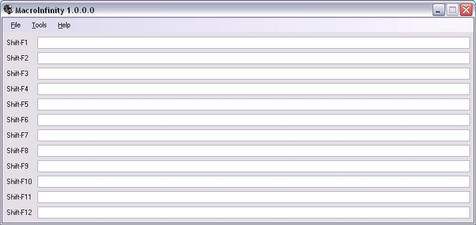

Macro Infinity
It's an application that edits Infantry text macros.
If you'd like to report any bugs or suggest any features send me an e-mail at twinone@nc.rr.com.
News
Download
Change Log
Features
Screenshots
July 19, 2006
Version 1.0.0.0 is out!
Download
This was written in C# using Visual Studio .NET 2005 and probably requires the .NET framework 2.0 to be installed, might work with 1.0. You can get it here or just use windows update.
| Description |
Version |
Size |
Link |
| Executable Only |
1.0.0.0 |
96KB |
Download |
| Executable Only (Zipped) |
1.0.0.0 |
62KB |
Download |
| Visual Studio Project (Zipped) |
1.0.0.0 |
368KB |
Download |
Change Log
Version 1.0.0.0 - July 19, 2006
- Initial Release
Features
- Opens infantry macro files (.mac) so you can easily edit them
Screenshots

The main form.